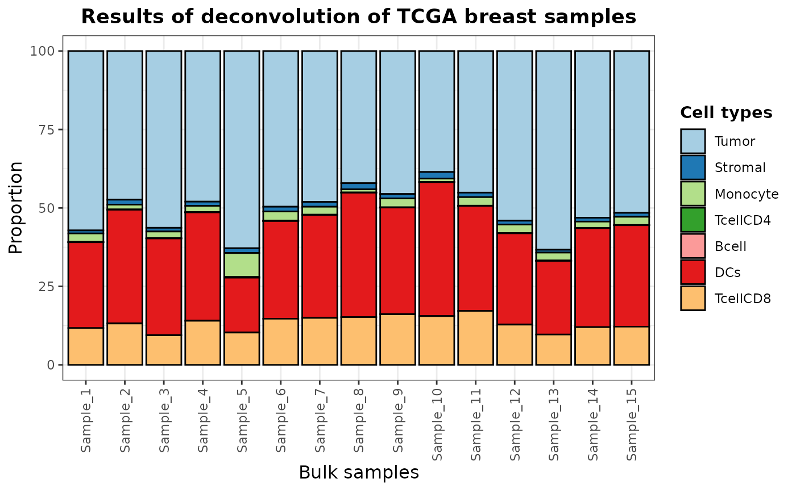

Using pre-trained context-specific deconvolution models
Source:vignettes/pretrainedModels.Rmd
pretrainedModels.RmddigitalDLSorteR offers the possibility to use pre-trained context-specific deconvolution models included in digitalDLSorteRdata package (https://github.com/diegommcc/digitalDLSorteRdata) to deconvolute new bulk RNA-Seq samples from the same biological environment. This is the simplest way to use digitalDLSorteR and only requires loading into R a raw bulk RNA-Seq matrix with genes as rows (annotated as SYMBOL) and samples as columns, and selecting the desired model. This is done by the deconvDigitalDLSorter function which normalizes the new samples to counts per million (CPMs) by default, so this matrix must be provided as raw counts. After the process, estimated cell composition of each sample can be explored as a bar chart using the barPlotCellTypes function (workflow summarized in the figure below).
Workflow to use pre-trained models
Available models
So far, available models just cover two possible biological environments: breast cancer and colorectal cancer. These models are able to accurately deconvolute new samples from the same environment as they have been trained (with transcriptional profiles from these specific contexts).
Breast cancer models
There are two different deconvolution models for breast cancer samples that differ in the level of specificity. Both have been trained using data from Chung et al. (2017) (GSE75688).
-
breast.chung.generic: this model considers 13 cell types, four of them being the intrinsic molecular subtypes of breast cancer (ER+,HER2+,ER+/HER2+andTNBC) and the rest immune and stromal cells (Stromal,Monocyte,TCD4mem(memory CD4+ T cells),BGC(germinal center B cells),Bmem(memory B cells),DC(dendritic cells),Macrophage,TCD8(CD8+ T cells) andTCD4reg(regulatory CD4+ T cells)). -
breast.chung.generic: this model considers 7 cell types, being generic groups of the cell types considered by the specific version: B cells (Bcell), T CD4+ cells (TcellCD4), T CD8+ cells (TcellCD8), monocytes (Monocyte), dendritic cells (DCs), stromal cells (Stromal) and tumor cells (Tumor).
Colorectal cancer model
This model was created with data from Li et al. (2017) (GSE81861). It is called colorectal.li and considers 10 cell types: cancer cells (CRC), epithelial (Ep), monocytes (M), macrophages (Mc), fibroblasts (Fb), CD4 T cells (CD4), CD8 T cells (CD8Gp), CD8 T cells (CD8Gn), germinal center B cells (gB) and mature B cells (pB).
Example using breast cancer samples from TCGA project
The following code chunk shows an example using breast.chung.generic model and a small portion of data from The Cancer Genome Atlas (TCGA) project (Koboldt et al. 2012; Ciriello et al. 2015) loaded from digitalDLSorteRdata:
suppressMessages(library(digitalDLSorteR))
suppressMessages(library(digitalDLSorteRdata))
# disable eager execution for compatibility issues
tensorflow::tf$compat$v1$disable_eager_execution()
# loading model and example data from digitalDLSorteRdata
data(breast.chung.generic)
data(TCGA.breast.small)breast.chung.generic is a DigitalDLSorterDNN object that can be inspected to check which cell types are considered by the model, how well it performed on test data, etc.
breast.chung.generic## Trained model: 20 epochs
## Training metrics (last epoch):
## loss: 0.0222
## accuracy: 0.9051
## mean_absolute_error: 0.0186
## categorical_accuracy: 0.9051
## Evaluation metrics on test data:
## loss: 0.0154
## accuracy: 0.9629
## mean_absolute_error: 0.0112
## categorical_accuracy: 0.9629
cell.types(breast.chung.generic)## [1] "Tumor" "Stromal" "Monocyte" "TcellCD4" "Bcell" "DCs" "TcellCD8"Now, we can use it to deconvolute TCGA.breast.small samples as follows:
# deconvolution
deconvResults <- deconvDigitalDLSorter(
data = TCGA.breast.small,
model = breast.chung.generic,
normalize = TRUE
)## === Filtering 32876 features in data that are not present in trained model## === Setting 11305 features that are not present in trained model to zero## === Normalizing data## === Predicting cell types present in the provided samples## DONE## Tumor Stromal Monocyte TcellCD4 Bcell DCs
## Sample_1 0.5716879 0.009549668 0.02705321 0.0009312486 2.085094e-05 0.2735237
## Sample_2 0.4737064 0.015726032 0.01532314 0.0008934744 1.881228e-05 0.3624099
## Sample_3 0.5632826 0.011810657 0.02118548 0.0009122468 2.213673e-05 0.3083328
## Sample_4 0.4798905 0.013469691 0.01989891 0.0007664470 4.999192e-05 0.3453779
## Sample_5 0.6283219 0.015287964 0.07622546 0.0022742241 3.257439e-06 0.1749346
## Sample_6 0.4960882 0.015261909 0.02924264 0.0010657794 1.409765e-05 0.3112175
## TcellCD8
## Sample_1 0.1172334
## Sample_2 0.1319222
## Sample_3 0.0944540
## Sample_4 0.1405466
## Sample_5 0.1029526
## Sample_6 0.1471100deconvDigitalDLSorter returns a data frame with the samples as rows (\(k\)) and the cell types considered by the model as columns (\(j\)). Each entry corresponds to the proportion of cell type \(k\) in sample \(i\). To visually evaluate these results using a bar chart, you can use the barplotCellTypes function as follows:
barPlotCellTypes(
deconvResults,
color.line = "black",
title = "Results of deconvolution of TCGA breast samples"
)
Finally, deconvDigitalDLSorterObj also offers two parameters in case you want to simplify the results by aggregating cell proportions of similar cell types: simplify.set and simplify.majority. For instance, we can summarize dendritic cells (DCs) and monocytes in the new class mononuclear phagocyte system (MPS) using simplify.set as follows:
# deconvolution
deconvResultsSum <- deconvDigitalDLSorter(
data = TCGA.breast.small,
model = breast.chung.generic,
normalize = TRUE,
simplify.set = list(MPS = c("DCs", "Monocyte"))
)## === Filtering 32876 features in data that are not present in trained model## === Setting 11305 features that are not present in trained model to zero## === Normalizing data## === Predicting cell types present in the provided samples## DONE
rownames(deconvResultsSum) <- paste("Sample", seq(nrow(deconvResults)), sep = "_")
barPlotCellTypes(
deconvResultsSum,
rm.x.text = FALSE,
color.line = "black",
title = "Results of deconvolution of TCGA breast samples (simplified)"
)
On the other hand, simplify.majority does not create new classes but sums the proportions to the most abundant cell type from those provided in each sample. See the documentation and examples for more details.
Contribute your own models
New models are planned to be published soon, but you can contribute your own models by making them available to other users. Please do not hesitate to contact us! We’ll check the models and include them in the digitalDLSorteRdata package.